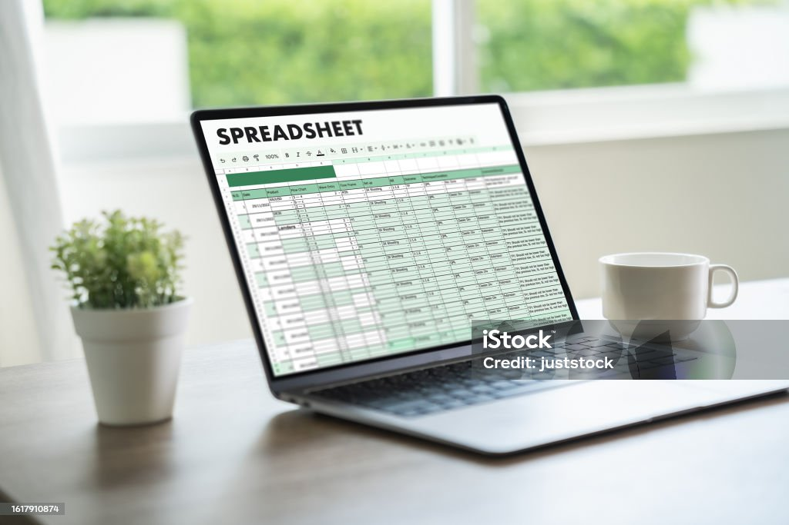

Implemented a comprehensive data cleaning project using SQL to standardize and validate data across multiple sources. This project involved identifying and correcting inconsistencies, removing duplicates, and ensuring data accuracy, which resulted in a 30% improvement in data reliability and efficiency.


Conducted extensive data exploration using SQL to uncover hidden patterns and insights. By writing complex queries, I identified key trends and relationships within the data, providing valuable information for strategic decision-making.
Developed interactive dashboards using Tableau to provide real-time insights into business performance. These visualizations enabled stakeholders to easily understand complex data, track key metrics, and make data-driven decisions.
Utilized Power BI to analyze and visualize data on average salaries by country, favorite programming languages, and job satisfaction levels concerning work-life balance and salary. The objective was to identify trends and correlations between these factors across different countries. Interactive dashboards were created to provide clear insights, highlighting regional salary differences, popular programming languages, and their impact on job satisfaction. This analysis helped stakeholders understand global patterns and make informed decisions.
This project involved using Python and Jupyter Notebook to scrape product data from Amazon. The goal was to collect information on product prices, ratings, reviews, and availability. I employed web scraping techniques using libraries such as BeautifulSoup and Selenium to extract the data efficiently. The collected data was then cleaned and analyzed to uncover trends and insights, such as price fluctuations, popular products, and customer sentiment. This analysis provided valuable information for competitive pricing and market research.
In this project, I conducted an exploratory data analysis (EDA) of the world's population using Jupyter Notebook. The dataset was thoroughly examined, with values sorted and grouped to identify patterns and trends. I utilized various visualization techniques, including box plots, histograms, and scatter plots, to present the data effectively. This analysis provided insights into population distribution, growth trends, and demographic variations across different regions and countries, facilitating a deeper understanding of global population dynamics.

In this project, I utilized Excel's powerful visualization tools, including pivot tables and various charts, to analyze bike sales data. The primary goal was to understand the sales distribution by gender and age of customers. I began by cleaning the dataset to ensure accuracy, then proceeded to create visualizations that provided clear insights into the sales patterns. This analysis helped in identifying key customer demographics and trends, contributing to more targeted marketing strategies.